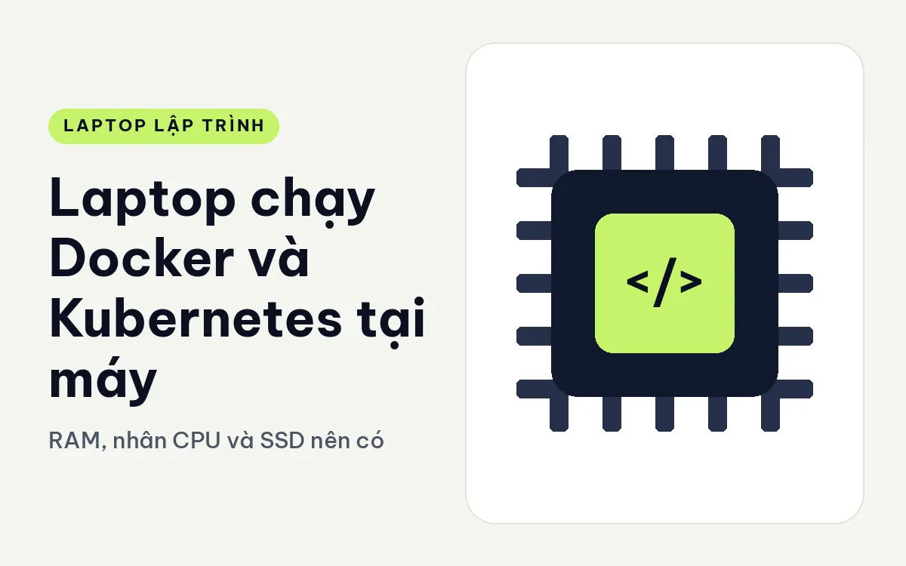
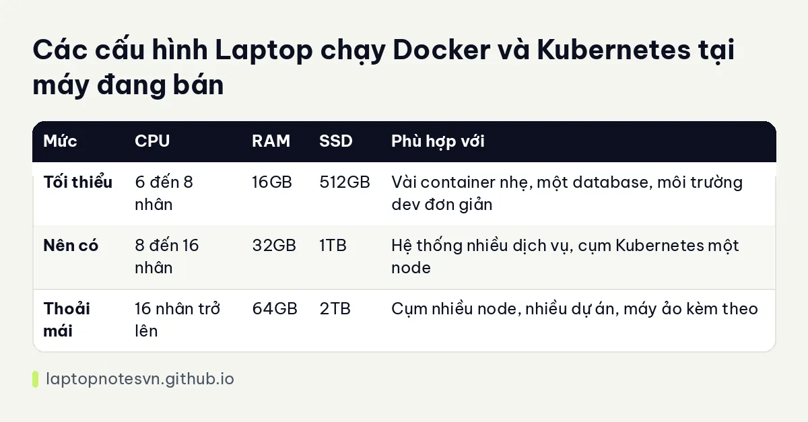

Laptop chạy Docker và Kubernetes tại máy - RAM, nhân CPU và SSD nên có

Chạy Docker trên laptop nghe nhẹ nhàng cho đến khi bạn dựng lên cả một hệ thống: cơ sở dữ liệu, hàng đợi tin nhắn, vài dịch vụ nội bộ và một cụm Kubernetes thu nhỏ. Mỗi container tự chiếm một phần RAM, và tổng thì lớn hơn bạn nghĩ. Bài này nói về phần cứng mà việc chạy container và cụm cục bộ thực sự cần.
Phần cứng Docker và Kubernetes tại máy dùng nhiều nhất
RAM đứng đầu. Docker trên Windows và macOS chạy trong một máy ảo, nên bộ nhớ dành cho máy ảo bị trừ khỏi phần còn lại của máy. Mỗi container database, mỗi dịch vụ Java đều ăn thêm. Một cụm Kubernetes cục bộ nhiều node còn nặng hơn. Với dev chạy nhiều container cùng lúc, 32GB là điểm khởi đầu hợp lý, và 64GB cho dư địa đáng kể. Xem cách tính chung ở bài lập trình viên cần bao nhiêu RAM.
Số nhân CPU quyết định mức độ song song. Build image, chạy test tích hợp, cụm nhiều pod đều tận dụng được nhiều nhân. Chip 8 nhân là đủ để làm quen, 16 nhân trở lên khi bạn chạy cụm thật.
SSD chứa image, volume và log. Image Docker tích lại rất nhanh: vài chục image có thể ngốn hàng chục gigabyte. SSD 1TB là mức nên có, 512GB thì phải dọn đều đặn.
Ảo hóa phải bật. Gần như mọi chip hiện nay đều hỗ trợ, nhưng phải bật trong BIOS nếu máy chưa bật sẵn.
Card đồ họa rời không liên quan tới Docker thông thường. Chỉ cần khi bạn cho container dùng GPU, ví dụ chạy mô hình AI.
Bảng cấu hình gợi ý cho Docker và Kubernetes tại máy
| Mức | CPU | RAM | SSD | Phù hợp với |
|---|---|---|---|---|
| Tối thiểu | 6 đến 8 nhân | 16GB | 512GB | Vài container nhẹ, một database, môi trường dev đơn giản |
| Nên có | 8 đến 16 nhân | 32GB | 1TB | Hệ thống nhiều dịch vụ, cụm Kubernetes một node |
| Thoải mái | 16 nhân trở lên | 64GB | 2TB | Cụm nhiều node, nhiều dự án, máy ảo kèm theo |
Con số này mang tính tham khảo. Container Go nhỏ nhẹ hơn nhiều so với dịch vụ Java lớn hay database.

Máy còn hàng hợp với Docker và Kubernetes tại máy
ThinkPad T14 Gen 7 có hai bản đều 32GB LPDDR5x dạng LPCAMM2, SSD 512GB Gen4, chip 8 nhân (Core Ultra 5 325 hoặc Core Ultra 7 355). Máy gọn 1,29 kg, có RJ45 và HDMI 2.1. Hợp dev chạy vài container trên đường đi, nhưng SSD 512GB cần dọn thường xuyên.
Dell Pro Max 16 MC16250 có bản Core Ultra 7 265H 16 nhân, 64GB DDR5 5600MHz, SSD 2TB Gen4, card RTX PRO 2000 8GB. Bản này nằm đúng mức thoải mái cho Docker và Kubernetes, kể cả khi bạn cho container dùng GPU.
Dell Pro Max 18 Plus có bản Core Ultra 9 285HX 24 nhân, 64GB DDR5 6400MHz, SSD 1TB Gen4, card RTX PRO 3000 12GB, màn 18 inch. Đây là máy mạnh nhất trong ba máy, hợp cụm nhiều node, nhưng nặng 3,25 kg nên là máy để bàn.
Ghi chú riêng ở Pro Max 18 Plus cho lập trình.
Hai kiểu dev dùng Docker khác nhau
Người làm backend thường chạy một database, một bộ nhớ đệm và vài dịch vụ của chính mình. Tải này khá đều và dễ đoán, nên 32GB RAM và chip 8 nhân là đủ. Máy gọn như T14 hợp kiểu này, vì phần lớn thời gian CPU chỉ ngồi chờ.
Người làm hạ tầng hay nền tảng lại khác. Họ dựng cụm Kubernetes cục bộ, thử vài lần triển khai, đổi cấu hình rồi dựng lại từ đầu. Mỗi lần dựng lại kéo image mới và chạy nhiều pod cùng lúc, nên CPU nhiều nhân và RAM lớn có giá trị rõ. Với kiểu này, máy 16 inch với 64GB là hợp lý hơn.
Có một kiểu thứ ba: người chạy cả hai cùng lúc với IDE nặng và trình duyệt mở hàng chục thẻ. Khi đó RAM bị chia ba, và con số 32GB nhanh chóng thành chật. Hãy cộng thử: máy ảo Docker lấy một nửa, IDE lấy vài gigabyte, trình duyệt lấy thêm vài gigabyte, phần còn lại dành cho hệ điều hành.
Một điểm dễ bỏ qua là mạng. Nếu bạn hay cắm dây mạng khi kéo image lớn hoặc làm việc ở văn phòng có mạng nội bộ, cổng RJ45 trên máy tiết kiệm được một bộ chuyển đổi. Ghi chú chọn máy gọn có trong bài ThinkPad T14 Gen 7 cho lập trình.
Vài lưu ý khi cài môi trường
Giới hạn bộ nhớ cho máy ảo Docker. Đặt mức tối đa phù hợp với RAM máy, ví dụ không quá một nửa tổng RAM, để hệ điều hành và IDE còn chỗ.
Dọn image định kỳ. Chạy lệnh dọn image không dùng và volume mồ côi mỗi tuần để SSD không phình.
Dùng WSL 2 trên Windows. Cách này nhẹ hơn máy ảo truyền thống, và bạn đặt được giới hạn bộ nhớ trong tệp cấu hình của WSL.
Kiểm soát cụm Kubernetes. Một cụm cục bộ một node là đủ để học và thử. Thêm node chỉ khi bạn thật sự cần mô phỏng cụm nhiều máy.
Chú ý nhiệt khi chạy nặng. Build và test chạy dài làm CPU nóng. Máy đặt thoáng sẽ giữ hiệu năng ổn định hơn.
Tách dữ liệu quan trọng ra ngoài. Volume trong container có thể mất khi dọn. Hãy sao lưu những dữ liệu không thể tạo lại.
Nếu bạn chỉ chạy vài container cho một dự án, đừng mua máy to hơn nhu cầu. Chỉ khi chạy cụm thật mới cần mức thoải mái.
Đăng ngày 09/11/2026